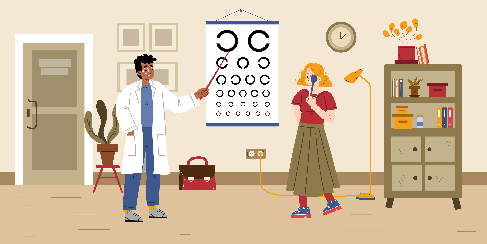

หลักการวัด VA

การจัดเตรียมสถานที่
- ห้องสำหรับใช้ตรวจคัดกรองควรเป็นห้องที่มีขนาดกว้างและยาว อย่างน้อย 6 เมตร หรือ 20 ฟุต ซึ่ง เป็นระยะห่าง มาตรฐานสำหรับการคัดกรองวัดสายตา แผ่นทดสอบสายตาควร ติดกับฉากหรือผนังผิวเรียบ โดย แถวที่ 5 (20/40) ควรจะอยู่สูงระดับ เดียวกับสายตาของผู้รับการคัดกรอง
- เลือกผนังด้านที่ไม่มีรูปภาพเกะกะ มีแสงสว่างส่องถึงเพียงพอ แสงสว่างควรจะส่องมาจากเพดานหรือ ส่องเข้าหาแผ่นทดสอบ โดยที่ไม่มีแสงสะท้อนรบกวนย้อนเข้าตาผู้รับการตรวจ
- ติดแผ่น “Snellen Chart” หรือ “Lea Chart” บนผนัง โดยให้ตัวเลข แถวที่ 5 หรือแถว 40 ฟุต (20/40) อยู่ในระดับเดียวกับตาของผู้รับการตรวจ
- ติดเทปกาวบนพื้นระยะห่างจากแผ่นทดสอบระดับสายตาประมาณ 6 เมตร (20 ฟุต) สำหรับ Snellen Chart หรือประมาณ 3 เมตร (10 ฟุต) สำหรับ Lea Chart
- ผู้ทดสอบไม่ควรยืนบังผู้รับการตรวจ แต่หันหลังให้ผนัง และเห็นหน้าผู้รับการตรวจตลอดเวลาที่ตรวจ
- สำหรับผู้ที่นั่งคอยตรวจควรแยกอยู่ต่างหาก โดยไม่ให้ผู้ที่คอยรับการคัด กรองเห็นเลขบนแผ่นทดสอบก่อน
- ไม่ควรมีกิจกรรมอื่นในบริเวณใกล้เคียงขณะตรวจคัดกรองเพื่อไม่ให้ผู้รับ การคัดกรองเสียสมาธิ
อุปกรณ์
อุปกรณ์ที่จำเป็นสำหรับการตรวจคัดกรองสายตามีดังนี้
- แผ่นทดสอบสายตามาตรฐานสเนลเลนแบบตัวเลข สำหรับทดสอบการมองเห็นระยะไกล (20ฟุต)
- อุปกรณ์บังตา (occluder)
- อุปกรณ์บังตาชนิดมีรู (pinhole)
- สายวัดระยะทาง
- ไม้สําหรับชี้ตัวเลข
- ไฟฉาย
- เทปกระดาษสําหรับติดพื้นทำเครื่องหมายบอกตำแหน่งที่ให้ผู้รับการ คัดกรองยืนหรือนั่งทดสอบ
ขั้นตอนการตรวจตา

- ผู้ตรวจถอดอุปกรณ์ช่วยการมอง เช่น แว่นตา หรือคอนแทคเลนส์ออกก่อน (ถ้ามี) โดยทดสอบสายตา ทั้งขณะถอดแว่นและสวมแว่น
- ผู้ตรวจยืนตรงตำแหน่งระยะ 6 เมตร/20 ฟุต ส้นเท้าทั้งสองข้างชิดเส้น
- ให้ผู้ตรวจปิดตาทีละข้าง โดยใช้ที่ปิดตาหรือมือซ้ายปิดตาข้างซ้ายเพื่อทดสอบตาข้างขวาแล้วจึงสลับมา ปิดตาข้างขวาด้วยมือขวาเพื่อทดสอบตาข้างซ้าย (เริ่มที่ตาข้างขวาก่อนเสมอ)
- ผู้ทดสอบยืนที่แผ่นทดสอบสายตาใช้ไม้ชี้ไปยังตัวเลขบนแผ่นทดสอบบรรทัดบนสุด ให้อ่านตัวเลขทีละ แถวจากบนลงล่าง
- ในการอ่านแผ่นทดสอบสายตา มีเกณฑ์ในการพิจารณาว่าทดสอบผ่านในแต่ละบรรทัด คือต้องอ่าน ตัวอักษรได้ถูกต้องมากกว่าร้อยละ 50 ของจำนวนตัวอักษรในแต่ละบรรทัดเช่น บรรทัดที่มีตัวเลข 7 ตัว ต้องอ่านได้ ถูกต้องตั้งแต่ 4 ตัวขึ้นไป
- กรณีผู้ตรวจอ่านตัวเลขในบรรทัดบนสุด (ระยะ 60 เมตร) ไม่ได้ ให้เลื่อนมายืนที่ระยะ 5 เมตร แล้วอ่าน เฉพาะบรรทัดบนสุด หากอ่านได้ที่ระยะ 5 เมตร ให้บันทึกว่า VA 5/60 ถ้ายังอ่านไม่ได้ให้เลื่อนระยะทางยืนขึ้นมา ครั้งละ 1 เมตร แล้วอ่านเฉพาะบรรทัดบนสุดเท่านั้น ให้สวมแว่นสายตาอ่านหากมีแว่นสายตาอยู่ หรืออ่านผ่าน พื้น โฮล ( pinhole ) เช่น หากตาเปล่าอ่านได้แถวเดียว เมื่อสวมแว่นอ่านได้สองแถว และเมื่อมองผ่าน pinhole แล้ว อ่านได้ปกติ ให้บันทึกว่า VA 6/60 อ่านรอบที่ 1 ถ้าอ่านไม่ได้ในแถว 6/6 ทุกกรณีต้องอ่านผ่านพินโฮลทุกราย VA c PH 6/6(c PH = with pinhole) อ่านรอบที่ 2 อ่านผ่านพินโฮล ผลการอ่านจะต้องดีกว่าอ่ายตาเปล่าเสม
- หากอยู่ห่าง chart ที่ 1 เมตรแล้วยังอ่านไม่ได้ให้ผู้ตรวจ ชูนิ้วมือไว้หน้าตาผู้ป่วยแล้วถามว่าเห็นกี่นิ้ว เช่นหากนับนิ้วได้ถูกต้องที่ระยะ 2 ฟุตให้บันทึกว่า FC 2 ft (FC = Counting finger), หรือ หากนับได้ที่ระยะ 1 ฟุต ให้บันทึกว่า FC 1 ft
- หากนับนิ้วไม่ได้แสดงว่าสายตามัวมาก ให้แกว่งมือหน้าตาผู้ป่วยแล้วถามว่าเห็นอะไรเคลื่อนไหวหรือไม่ ถ้าเห็น ให้บันทึกเป็น HM (hand movement อ่านว่าแฮนมูฟเม้น คือการเคลื่อนไหวของมือ) ควรระวังไม่แกว่ง มือไปโดนคิ้ว หรือขนตาผู้ป่วย
- หากมองไม่เห็นวัตถุเคลื่อนไหว ให้ใช้ไฟฉายส่องหน้าตาผู้ป่วย แล้วถามว่าเห็นไฟ หรือไม่ ถ้าเห็นแสง จากไฟที่ส่อง แต่ไม่สามารถบอกทิศทางของแสงไฟ ให้บันทึกว่า PL (perception of light) หากสามารถบอก ทิศทางของแสงที่ส่องมาจากทิศต่างๆ ได้ถูกต้องให้บันทึกว่า PJ (projection of light)
- แต่ถ้ามองไม่เห็นแสงไฟที่ส่องเลย ให้บันทึกว่า No PL (no light perception) บ่งว่าบอดสนิท อย่างไรก็ตามการทดสอบควรใช้ไฟที่มีความสว่างที่สุด ก่อนที่จะระบุว่า No PL